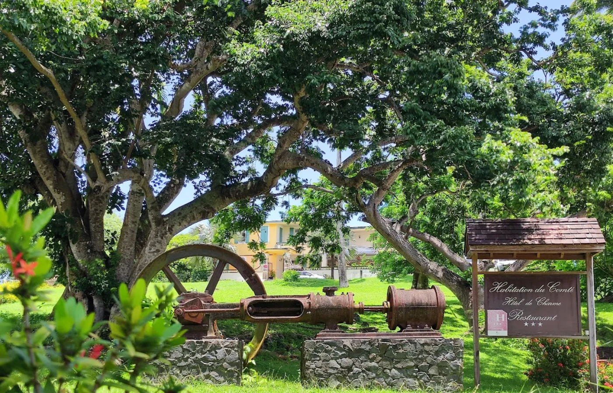

Les Antilles, destination lune de miel par excellence
Il y a des destinations qui se prêtent naturellement au voyage de noce. Les Antilles en font partie depuis longtemps : la lumière dorée du soir, les eaux chaudes et transparentes, la végétation tropicale, les couchers de soleil sur la mer des Caraïbes. Tout concourt à créer une atmosphère qui n'appartient qu'à vous deux.
Mais une bonne lune de miel aux Antilles, ça ne s'improvise pas. Le choix de l'île, de l'hébergement et des expériences fait toute la différence entre un voyage ordinaire et un souvenir qui dure. Voici ce que je construis pour mes couples, après des années de spécialisation sur ces destinations.
Quelle île choisir pour votre voyage de noce ?
La question revient à chaque fois. La réponse dépend de ce que vous cherchez.
La Guadeloupe est parfaite pour les couples qui veulent une destination complète : plages de sable blanc, forêt tropicale, gastronomie créole, vie nocturne au Gosier. En deux semaines, vous pouvez tout voir. C'est aussi la destination où l'offre d'hébergements romantiques est la plus large.
Les Grenadines s'imposent pour ceux qui rêvent d'une croisière en catamaran. L'intimité est totale, les paysages sont d'une beauté irréelle et les Tobago Cays sont parmi les plus beaux spots de snorkeling au monde.
La Martinique séduira les amateurs de gastronomie et de culture. L'île a une scène culinaire exceptionnelle, des route du rhum magnifiques et des plages sauvages dans le nord difficiles à égaler.
La Dominique est l'île nature par excellence, loin du tourisme de masse. Entre cascades, rivières, plages de sable noir et spots de plongée magnifiques… Ici, la vie bat son rythme, entre calme et douceur de vivre, comme vous n'en trouverez nulle part ailleurs.
Conseil de Mégane
Évitez de combiner trop d'îles sur une courte durée. Un itinéraire sur deux îles bien organisé vaut mieux que trois îles survolées. La qualité du temps passé dans chaque endroit, c'est ce qui crée les vrais souvenirs.
Les hébergements les plus romantiques
Les grandes chaînes hôtelières existent aux Antilles, mais ce n'est pas là que vous trouverez le plus beau souvenir. Ce que je recommande systématiquement à mes couples :
- Les villas privées avec piscine à débordement, souvent moins chères qu'une suite d'hôtel et infiniment plus intimes
- Les éco-lodges perchés dans la végétation, comme le Jungle Bay en Dominique : des chambres spacieuses avec vue mer et service hôtelier de luxe
- Les petits hôtels de charme tenus par des propriétaires passionnés, comme l'Habitation du Comté en Guadeloupe
- Pour les amoureux de navigation : une nuit au mouillage dans un voilier, loin de toute côte, sous les étoiles
- Une soirée en catamaran privatisé, une expérience que j'adore proposer à mes couples

L'Habitation du Comté, l'une des adresses d'exception que je réserve aux voyages de noce.
Les expériences à vivre à deux
Ce qui fait la différence dans un voyage de noce, c'est souvent un moment que vous n'auriez pas trouvé seuls. Voici ceux que je construis le plus souvent pour mes clients :
- Un dîner les pieds dans l'eau avec un chef local qui cuisine du poisson pêché le matin même
- Une excursion privée au coucher du soleil en kayak dans un lagon bioluminescent
- Un massage en duo en pleine nature avec bruit de rivière en fond
- Une journée en catamaran privatisé avec snorkeling, déjeuner à bord et apéro au coucher du soleil
- Une visite privée d'une distillerie de rhum agricole, avec dégustation guidée et cocktail personnalisé
Les expériences à vivre en couple aux Antilles, pour un voyage de noce qui marque pour toujours.
Quand partir : saisons et météo
La haute saison aux Antilles s'étend de décembre à avril. C'est la période idéale : températures douces, peu de pluie, mer calme. C'est aussi la plus demandée, donc la plus chère et celle où les meilleures adresses affichent complet des mois à l'avance.
La basse saison (mai à novembre) offre des prix plus attractifs et des plages moins fréquentées. Les pluies sont plus fréquentes mais généralement courtes. Juillet et août restent très beaux aux Antilles, à condition d'éviter la période des ouragans qui culmine en septembre-octobre.
Pour un mariage en juin ou en septembre, je conseille de commencer à planifier le voyage de noce au moins 8 à 10 mois à l'avance. Les meilleures villas et les prestataires d'exception se réservent tôt, surtout en haute saison.
Vous souhaitez que j'organise votre lune de miel aux Antilles ? Découvrez mes services de travel planner pour votre voyage de noce aux Antilles.